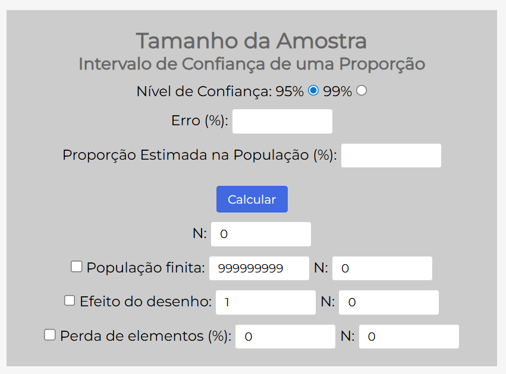

Capítulo 4 Tamanho da Amostra
4.1 Por que calcular o tamanho da amostra
Calcular o tamanho da amostra é etapa obrigatória no planejamento de qualquer pesquisa. É esse cálculo que determina quantos participantes o estudo precisa para que os resultados representem a população, sejam estatisticamente confiáveis, tenham precisão suficiente para responder à pergunta e ainda caibam no tempo e nos recursos que você tem.
4.1.1 Errar o tamanho da amostra
Uma amostra pequena demais não tem poder para detectar o efeito que você procura: o estudo termina sem conclusão, ou com uma conclusão equivocada, e às vezes é invalidado por isso. Uma amostra grande demais desperdiça tempo e dinheiro e, na pesquisa com pessoas, levanta uma questão ética — você expôs mais gente do que precisava para responder à mesma pergunta.
Calcular direito, portanto, não é só uma exigência técnica: é o que torna a pesquisa cientificamente válida e eticamente responsável.
4.2 O cálculo muda conforme o objetivo
Não existe uma fórmula única. O método varia conforme o que você quer estimar ou testar, e cada análise exige informações diferentes:
| Objetivo da pesquisa | Exemplo | O que você precisa saber antes |
|---|---|---|
| Estimar uma proporção | Percentual de alunos com ansiedade | Margem de erro, nível de confiança, proporção estimada |
| Estimar uma média | Média de horas de estudo por dia | Desvio padrão, margem de erro, nível de confiança |
| Comparar dois grupos | Estresse entre dois cursos | Tamanho do efeito, poder estatístico, nível de significância |
| Testar correlação | Relação entre sono e desempenho | Tamanho do efeito esperado, poder estatístico |
| Estudos experimentais | Efeito de uma intervenção | Grupos controle e experimental, poder, efeito esperado |
Vamos detalhar o primeiro caso, que é o mais comum nos trabalhos de graduação.
4.3 Cálculo para estimar uma proporção
Quando o objetivo é estimar uma proporção — “qual percentual de estudantes tem ansiedade?” —, precisamos de quatro informações:
| Parâmetro | O que é | No exemplo da UFTM |
|---|---|---|
| Tamanho da população (N) | Total de indivíduos que você quer estudar | 6.900 estudantes |
| Margem de erro (E) | Quanto você aceita errar na estimativa | 5% (0,05) |
| Nível de confiança | Quão confiante você quer estar | 95% (o padrão) |
| Proporção estimada (p) | Estimativa inicial do fenômeno | 50% (0,5), o pior cenário |
4.3.1 A fórmula
Para população infinita ou muito grande:
\[ n = \frac{Z^2 \cdot p \cdot (1 - p)}{E^2} \]
Onde \(n\) é o tamanho da amostra necessário; \(Z\) é o valor da distribuição normal padrão, que vale 1,96 para 95% de confiança e 2,58 para 99%; \(p\) é a proporção estimada, e usamos 0,5 quando não temos ideia; e \(E\) é a margem de erro em decimal, de modo que 5% vira 0,05.
Queremos estimar a proporção de estudantes da UFTM com sintomas de ansiedade. A população é de 6.900 estudantes, aceitamos uma margem de erro de 5%, queremos 95% de confiança e, como não fazemos ideia da proporção, usamos 50%. Substituindo:
\[ n = \frac{1,96^2 \cdot 0,5 \cdot (1 - 0,5)}{0,05^2} = \frac{3,8416 \cdot 0,5 \cdot 0,5}{0,0025} = \frac{0,9604}{0,0025} = 384,16 \]
Precisamos de 384 estudantes.
4.3.2 Ajuste para população finita
Quando a população é “pequena” — na prática, quando N é menor que 10.000 —, aplicamos uma correção que aproveita o fato de estarmos pegando uma fração relevante do total:
\[ n_{ajustado} = \frac{n}{1 + \frac{n-1}{N}} \]
No nosso caso:
\[ n_{ajustado} = \frac{384}{1 + \frac{384-1}{6900}} = \frac{384}{1 + 0,0555} = \frac{384}{1,0555} = 364 \]
Com a correção, precisamos de 364 estudantes, e não mais 384.
O que isso significa na prática? Que com 364 estudantes temos 95% de confiança nos resultados, com margem de erro de ±5%, e que esses resultados representam bem os 6.900 alunos. Se 60% da amostra relatar ansiedade, podemos afirmar que entre 55% e 65% de todos os estudantes da UFTM têm ansiedade, com 95% de confiança.
4.4 E se a pesquisa tiver vários objetivos?
A regra é simples: calcule cada objetivo separadamente e use a maior amostra.
Imagine uma pesquisa com quatro objetivos. Estimar o percentual com ansiedade pede 364 alunos; calcular a média de bem-estar pede 280; comparar três cursos pede 120; e testar a correlação entre sono e estresse pede 85. A decisão é usar 364, porque essa amostra é suficiente para todos os objetivos ao mesmo tempo.
4.4.1 Ajuste para perdas
Nem todo mundo convidado vai participar ou responder, então acrescente uma margem de segurança:
\[ \text{amostra final} = \frac{\text{amostra calculada}}{1 - \text{perda esperada}} \]
Prevendo 20% de perdas, 364 ÷ 0,80 = 455. Ou seja, você precisa alcançar 455 pessoas para terminar com as 364 respostas válidas de que precisa.
4.5 Ferramentas para o cálculo
Nosso foco aqui não é fazer contas na mão, e sim compreender os conceitos e saber onde buscar ajuda. Existem hoje várias ferramentas gratuitas que fazem todo o trabalho.
Entre as calculadoras online, a Calculadora USP Bauru é a mais simples para proporções e médias: é rápida, está em português e não exige instalação. O OpenEpi é voltado para estudos em saúde e epidemiologia, e cobre desenhos como caso-controle e coorte. Já o G*Power é o mais completo e virou padrão em pesquisa: ele calcula amostra e poder estatístico para comparações e testes mais complexos, mas precisa ser instalado.
4.5.1 No R
A ideia é a mesma das calculadoras: em vez de aplicar a fórmula na mão, usamos uma função pronta. O pacote samplingbook faz o cálculo para proporção.
# Instalar o pacote (se ainda não tiver)
# install.packages("samplingbook")
# Carregar
library(samplingbook)
# Calcular amostra para proporção (considerando a população infinita)
sample.size.prop(
e = 0.05, # Margem de erro (5%)
P = 0.5, # Proporção estimada (50%)
N = Inf, # Tamanho da população: infinita
level = 0.95 # Nível de confiança (95%)
)##
## sample.size.prop object: Sample size for proportion estimate
## Without finite population correction: N=Inf, precision e=0.05 and expected proportion P=0.5
##
## Sample size needed: 385# Calcular amostra para proporção (considerando a população finita)
sample.size.prop(
e = 0.05,
P = 0.5,
N = 6900, # Tamanho da população: finita
level = 0.95
)##
## sample.size.prop object: Sample size for proportion estimate
## With finite population correction: N=6900, precision e=0.05 and expected proportion P=0.5
##
## Sample size needed: 364E chegamos aos mesmos 364 estudantes.
Na saída, sample size needed quer dizer “tamanho de amostra necessário”.
Se preferir, dá para escrever a fórmula diretamente:
# Cálculo direto
N <- 6900
Z <- 1.96
p <- 0.5
E <- 0.05
n <- (Z^2 * p * (1-p)) / E^2
n_final <- ceiling(n / (1 + (n-1) / N))
n_final## [1] 364A vantagem de fazer no R é que o cálculo fica rápido, sem erro de conta, reprodutível por qualquer pessoa e fácil de repetir com outros cenários — basta trocar um número e rodar de novo.
4.5.2 E a inteligência artificial?
Você também pode pedir ajuda ao ChatGPT, ao Copilot ou a outra IA. Um exemplo de pergunta:
"Preciso calcular o tamanho da amostra para uma pesquisa
com estudantes universitários (população de 6.900).
Quero estimar a proporção de alunos com ansiedade,
com 95% de confiança e margem de erro de 5%.
Como faço e qual o resultado?"Atenção: sempre valide o resultado da IA em uma das calculadoras acima. Ela erra, e erra com confiança.
4.5.3 Qual ferramenta escolher
Se você está começando, use a Calculadora USP Bauru. Se a pesquisa é da área da saúde, o OpenEpi cobre mais desenhos de estudo. Se precisa comparar grupos ou testar correlações, vá de G*Power. Se já usa R nas análises, os pacotes samplingbook e pwr resolvem. E se quer só entender o conceito rapidamente, pergunte a uma IA — mas confira o resultado em uma calculadora.
Seja qual for a escolha, documente-a no projeto. Um exemplo de como citar:
“O tamanho amostral foi calculado utilizando a Calculadora Amostral da USP Bauru (http://estatistica.bauru.usp.br/calculoamostral/), considerando população de 6.900 estudantes, margem de erro de 5% e nível de confiança de 95%.”
A boa notícia é que você não precisa ser expert em matemática para fazer isso direito. Com as ferramentas certas, o cálculo sai em minutos, e sobra tempo para o que realmente importa: planejar e executar uma pesquisa de qualidade.
4.6 Atividade 2: análise crítica do artigo
Volte ao artigo que você buscou na Atividade 1 e responda ao que segue.
4.6.1 Análise metodológica
1. Os autores discutem o cálculo do tamanho da amostra? Procure se há explicação sobre como o tamanho foi determinado, se mencionam a fórmula, o software ou a ferramenta usada, e se apresentam os parâmetros (margem de erro e nível de confiança). Se essa informação não aparece, pergunte-se: isso é uma limitação do estudo?
2. A população da pesquisa foi claramente definida? Verifique quem compõe a população-alvo, se há critérios de inclusão e exclusão, e se o contexto está delimitado quanto a local e período. Uma população mal definida compromete a validade dos resultados.
3. O tamanho da amostra foi adequado? Avalie criticamente se a amostra parece grande o suficiente, se é representativa da população e se os próprios autores discutem as limitações relacionadas ao tamanho dela.
4.6.2 Refaça o cálculo
Use uma das ferramentas indicadas e preencha:
| Item | Informação do artigo | Seu cálculo |
|---|---|---|
| Tamanho da população (N) | ||
| Margem de erro | ||
| Nível de confiança | ||
| Tipo de cálculo necessário | ||
| Tamanho no artigo | ||
| Seu resultado | ||
| Coincidem? | ☐ Sim ☐ Não |
Se os números não coincidirem, quais podem ser as razões?
4.6.3 Aspectos éticos
4. A pesquisa foi aprovada pelo Comitê de Ética? Procure no artigo a menção à aprovação do CEP, o número do parecer e a referência ao TCLE, o Termo de Consentimento Livre e Esclarecido.
5. Por que submeter ao Comitê de Ética importa? A submissão protege os participantes, garantindo que seus direitos sejam respeitados; assegura o consentimento informado, isto é, uma participação voluntária e esclarecida; resguarda a confidencialidade dos dados pessoais; obriga a avaliar a relação entre riscos e benefícios; e sustenta a credibilidade da pesquisa.
Não submeter tem consequências concretas: além da violação dos direitos dos participantes, há infração às Resoluções CNS 466/2012 e 510/2016, o artigo pode ser rejeitado ou retratado depois de publicado, e o pesquisador está sujeito a sanções.
Conheça o Comitê de Ética em Pesquisa (CEP) da UFTM em https://www.uftm.edu.br/comitesecomissoes/cep. Lá você encontra como submeter projetos, os documentos necessários, os prazos de tramitação e as regulamentações vigentes.
Para fechar: se você fosse revisor deste artigo, aprovaria a metodologia amostral? Justifique.
4.7 Exercício: a Calculadora USP Bauru
Você é pesquisador(a) e quer investigar a adesão ao uso de equipamentos de proteção individual (EPIs) entre os profissionais de enfermagem de um hospital universitário.
O hospital tem 450 profissionais de enfermagem, entre enfermeiros, técnicos e auxiliares. Estudos semelhantes mostram que cerca de 70% deles usam EPIs corretamente, e você quer trabalhar com 95% de confiança e margem de erro de 5%. Quantos profissionais precisa incluir na amostra?
4.7.1 Passo a passo na calculadora
Acesse http://estatistica.bauru.usp.br/calculoamostral/, clique em Cálculos no menu e selecione 1 - Intervalo de Confiança de uma Proporção. Preencha os campos conforme a imagem:

| Campo | O que colocar | Valor |
|---|---|---|
| Nível de Confiança | Deixe marcado 95% | 95% |
| Erro (%) | Margem de erro desejada | 5 |
| Proporção Estimada na População (%) | Uso correto de EPIs | 70 |
| População finita | Marque a caixa e informe o total | 450 |
Depois, clique em Calcular.
4.7.2 Anote seus resultados
a) Quantos profissionais você precisa pesquisar?
_______ profissionais
b) Qual é a diferença no tamanho da amostra ao considerar população finita e infinita?
Sem considerar população finita (infinita): _______ profissionais
Considerando população finita (450): _______ profissionais
Diferença: _______ profissionais
c) Volte às configurações originais e aumente o nível de confiança para 99%. O que acontece?
Com 99% de confiança: _______ profissionais
d) Retorne para 95% de confiança e diminua a margem de erro para 3%. Qual o impacto?
Com erro de 3%: _______ profissionais
e) Volte às configurações originais (95% de confiança, erro de 5%, proporção de 70%). Agora use o campo “Perda de elementos (%)” e considere 20% de perdas, por férias, licença ou recusa. Quantas pessoas você precisaria alcançar?
Ajustado para perdas: _______ profissionais
4.7.3 Questões para reflexão
1. Considerando que você precisa pesquisar _____ profissionais de um total de 450, isso representa cerca de _____% da população. É viável? Por quê?
2. Por que o tamanho da amostra é menor quando consideramos a população finita (450) em vez de infinita?
3. Se tivesse que escolher entre erro de 5% com 95% de confiança e erro de 3% com 95% de confiança, qual escolheria, considerando tempo e recursos limitados? Justifique.
4.7.4 Desafio extra
Agora mude o cenário: suponha que você não faça ideia da proporção de profissionais que usam EPIs corretamente. Quando não temos estimativa prévia, usamos 50%, que é o pior cenário e gera a maior amostra.
Volte à calculadora, confira que os parâmetros estão nas configurações originais (95% de confiança, erro de 5%, população finita de 450) e mude apenas a proporção estimada para 50%. Recalcule.
Qual é o novo tamanho da amostra? _______ profissionais. E por que ele mudou?
4.7.5 Gabarito
Clique para ver as respostas
Considerando população finita de 450 profissionais e proporção de 70%:
a) Amostra necessária (erro de 5%, confiança de 95%): 189 profissionais.
b) Comparação: sem considerar a população finita, seriam 323 profissionais; com a correção para os 450, caem para 189. A diferença é de 134 pessoas, ou seja, a correção reduz bastante.
c) Com 99% de confiança: 250 profissionais na população finita, contra 560 na infinita. Repare que 560 não faz sentido algum, por ser maior que a própria população do hospital.
d) Com erro de 3%: 300 profissionais na população finita, contra 897 na infinita — outro número sem sentido.
e) Ajustado para 20% de perdas: 237 profissionais, porque 189 ÷ 0,80 = 236,25, e arredondamos para cima.
Desafio extra, com proporção de 50%: 208 profissionais, contra os 189 obtidos com 70%. A amostra aumentou porque 50% é o cenário mais conservador, o que gera a maior variabilidade possível.
E por que 50% gera a maior variabilidade? Porque a fórmula do cálculo para proporção inclui o produto p × (1 − p), e esse produto é máximo justamente quando p vale 0,5:
| Proporção (p) | p × (1 − p) | Variabilidade |
|---|---|---|
| 10% (0,10) | 0,10 × 0,90 = 0,09 | Baixa |
| 30% (0,30) | 0,30 × 0,70 = 0,21 | Média |
| 50% (0,50) | 0,50 × 0,50 = 0,25 | Máxima |
| 70% (0,70) | 0,70 × 0,30 = 0,21 | Média |
| 90% (0,90) | 0,90 × 0,10 = 0,09 | Baixa |
É por isso que, sem nenhuma estimativa prévia, usamos 50%: é a escolha que nos protege do pior caso.
Reflexão 1: 189 de 450 é 42% da população. É uma amostra grande em termos proporcionais, mas perfeitamente viável dentro de um hospital.
Reflexão 2: a correção para população finita leva em conta que estamos pegando uma fração significativa do total — 42%, neste caso. Quanto maior essa fração, menos pessoas são necessárias para atingir a mesma precisão.
Ao final deste exercício você deve saber usar a Calculadora USP Bauru passo a passo, entender por que a correção para população finita importa, perceber como o nível de confiança e a margem de erro puxam o tamanho da amostra para cima ou para baixo, saber por que usamos 50% quando não temos estimativa e como ajustar o número para as perdas esperadas. O próximo passo é aplicar isso à sua própria pesquisa.